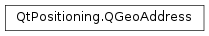

QGeoAddress¶
Synopsis¶
Functions¶
- def
__eq__(other) - def
__ne__(other) - def
city() - def
clear() - def
country() - def
countryCode() - def
county() - def
district() - def
isEmpty() - def
isTextGenerated() - def
postalCode() - def
setCity(city) - def
setCountry(country) - def
setCountryCode(countryCode) - def
setCounty(county) - def
setDistrict(district) - def
setPostalCode(postalCode) - def
setState(state) - def
setStreet(street) - def
setText(text) - def
state() - def
street() - def
text()
Detailed Description¶
The
PySide2.QtPositioning.QGeoAddressclass represents an address of aPySide2.QtPositioning.QGeoLocation.The address’ attributes are normalized to US feature names and can be mapped to the local feature levels (for example State matches “Bundesland” in Germany).
The address contains a
PySide2.QtPositioning.QGeoAddress.text()for displaying purposes and additional properties to access the components of an address:
-
class
PySide2.QtPositioning.QGeoAddress¶ -
class
PySide2.QtPositioning.QGeoAddress(other) Parameters: other – PySide2.QtPositioning.QGeoAddressDefault constructor.
Constructs a copy of
other.
-
PySide2.QtPositioning.QGeoAddress.city()¶ Return type: unicode Returns the city.
-
PySide2.QtPositioning.QGeoAddress.clear()¶ Clears all of the address’ data fields.
-
PySide2.QtPositioning.QGeoAddress.country()¶ Return type: unicode Returns the country name.
-
PySide2.QtPositioning.QGeoAddress.countryCode()¶ Return type: unicode Returns the country code according to ISO 3166-1 alpha-3
-
PySide2.QtPositioning.QGeoAddress.county()¶ Return type: unicode Returns the county. The county is considered the second subdivision below country.
-
PySide2.QtPositioning.QGeoAddress.district()¶ Return type: unicode Returns the district. The district is considered the subdivison below city.
-
PySide2.QtPositioning.QGeoAddress.isEmpty()¶ Return type: PySide2.QtCore.boolReturns whether this address is empty. An address is considered empty if all of its fields are empty.
-
PySide2.QtPositioning.QGeoAddress.isTextGenerated()¶ Return type: PySide2.QtCore.boolReturns true if
QGeoAddress.text()is automatically generated from address elements, otherwise returns false ifPySide2.QtPositioning.QGeoAddress.text()has been explicitly assigned.
-
PySide2.QtPositioning.QGeoAddress.__ne__(other)¶ Parameters: other – PySide2.QtPositioning.QGeoAddressReturn type: PySide2.QtCore.boolReturns true if this address is not equal to
other, otherwise returns false.
-
PySide2.QtPositioning.QGeoAddress.__eq__(other)¶ Parameters: other – PySide2.QtPositioning.QGeoAddressReturn type: PySide2.QtCore.boolReturns true if this address is equal to
other, otherwise returns false.
-
PySide2.QtPositioning.QGeoAddress.postalCode()¶ Return type: unicode Returns the postal code.
-
PySide2.QtPositioning.QGeoAddress.setCity(city)¶ Parameters: city – unicode Sets the
city.
-
PySide2.QtPositioning.QGeoAddress.setCountry(country)¶ Parameters: country – unicode Sets the
countryname.
-
PySide2.QtPositioning.QGeoAddress.setCountryCode(countryCode)¶ Parameters: countryCode – unicode Sets the
countryCodeaccording to ISO 3166-1 alpha-3
-
PySide2.QtPositioning.QGeoAddress.setCounty(county)¶ Parameters: county – unicode Sets the
county.
-
PySide2.QtPositioning.QGeoAddress.setDistrict(district)¶ Parameters: district – unicode Sets the
district.
-
PySide2.QtPositioning.QGeoAddress.setPostalCode(postalCode)¶ Parameters: postalCode – unicode Sets the
postalCode.
-
PySide2.QtPositioning.QGeoAddress.setState(state)¶ Parameters: state – unicode Sets the
state.
-
PySide2.QtPositioning.QGeoAddress.setStreet(street)¶ Parameters: street – unicode Sets the street-level component of the address to
street.This typically includes a street number and street name but may also contain things like a unit number, a building name, or anything else that might be used to distinguish one address from another.
-
PySide2.QtPositioning.QGeoAddress.setText(text)¶ Parameters: text – unicode If
textis not empty, explicitly assignstextas the string to be returned byPySide2.QtPositioning.QGeoAddress.text().PySide2.QtPositioning.QGeoAddress.isTextGenerated()will return false.If
textis empty, indicates thatPySide2.QtPositioning.QGeoAddress.text()should be automatically generated from the address elements.PySide2.QtPositioning.QGeoAddress.isTextGenerated()will return true.
-
PySide2.QtPositioning.QGeoAddress.state()¶ Return type: unicode Returns the state. The state is considered the first subdivision below country.
-
PySide2.QtPositioning.QGeoAddress.street()¶ Return type: unicode Returns the street-level component of the address.
This typically includes a street number and street name but may also contain things like a unit number, a building name, or anything else that might be used to distinguish one address from another.
-
PySide2.QtPositioning.QGeoAddress.text()¶ Return type: unicode Returns the address as a single formatted string. It is the recommended string to use to display the address to the user. It typically takes the format of an address as found on an envelope, but this is not always necessarily the case.
The address text is either automatically generated or explicitly assigned. This can be determined by checking
PySide2.QtPositioning.QGeoAddress.isTextGenerated().If an empty string is provided to
PySide2.QtPositioning.QGeoAddress.setText(), thenPySide2.QtPositioning.QGeoAddress.isTextGenerated()will be set to true and will return a string which is locally formatted according toPySide2.QtPositioning.QGeoAddress.countryCode()and based on the elements of the address such as street, city and so on. Because the text string is generated from the address elements, a sequence of calls such as ,PySide2.QtPositioning.QGeoAddress.setStreet(), may return different strings for each invocation of .If a non-empty string is provided to
PySide2.QtPositioning.QGeoAddress.setText(), thenPySide2.QtPositioning.QGeoAddress.isTextGenerated()will be set to false and will always return the explicitly assigned string. Calls to modify other elements such asPySide2.QtPositioning.QGeoAddress.setStreet(),PySide2.QtPositioning.QGeoAddress.setCity()and so on will not affect the resultant string from .
© 2018 The Qt Company Ltd. Documentation contributions included herein are the copyrights of their respective owners. The documentation provided herein is licensed under the terms of the GNU Free Documentation License version 1.3 as published by the Free Software Foundation. Qt and respective logos are trademarks of The Qt Company Ltd. in Finland and/or other countries worldwide. All other trademarks are property of their respective owners.